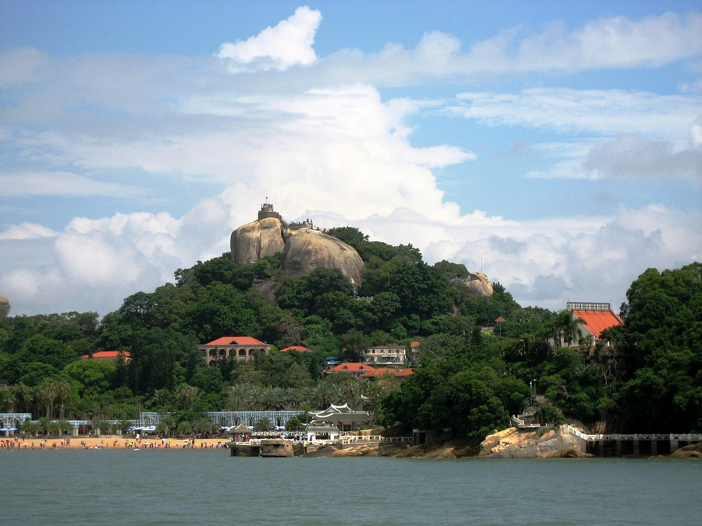
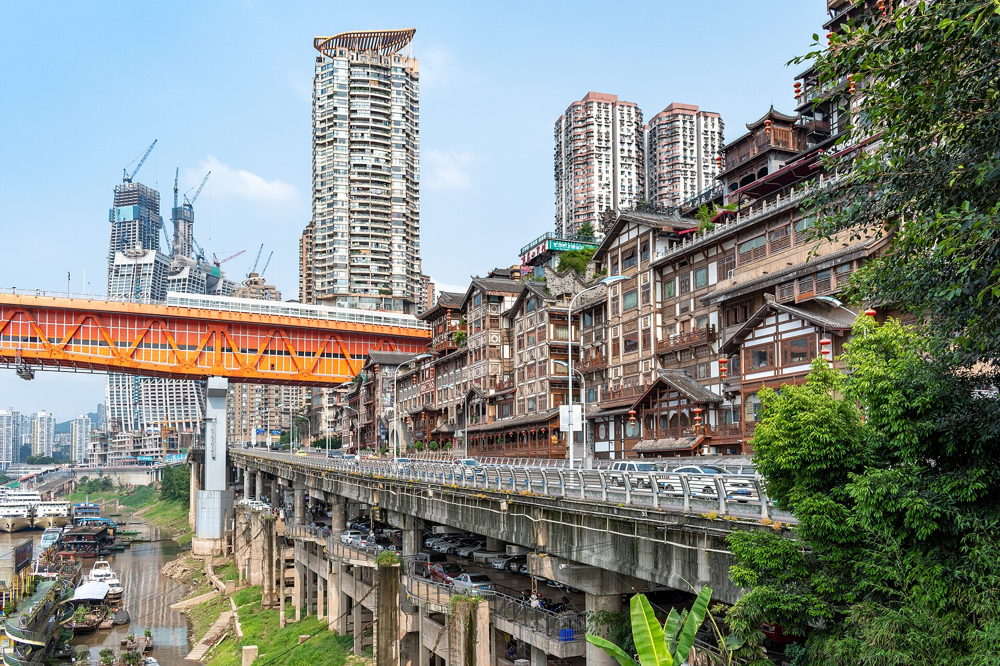

2026.08 · 三天两晚
2026.08 · 三天两晚
青岛 · 红瓦绿树，碧海蓝天
从百年栈桥、大鲍岛里院，到八大关万国建筑与啤酒博物馆，再以一场海上日出告别——老城与海岸线的人文三日。
打开青岛攻略 → 三天两晚 · 一天一岛
三天两晚 · 一天一岛
舟山 · 海天佛国，渔都港城
跳着岛走"普陀金三角"：朱家尖踏浪、普陀山礼佛、桃花岛寻侠，最后在沈家门十里渔港用一顿海鲜收尾。
打开舟山攻略 → 2026.10.31 · 一日往返
2026.10.31 · 一日往返
绍兴 · 桥多，酒香，书生多
高铁 73 分钟直达，一天圈在古城 2 公里里：从百草园读到三味书屋，沈园的《钗头凤》，仓桥直街的臭豆腐，最后在八字桥上看乌篷船摇过南宋的石洞。
打开绍兴攻略 → 三天两晚 · 日期待定
三天两晚 · 日期待定
南京 · 一眼六朝，半部民国
从老城南的烟火到钟山的林荫：392 级台阶登中山陵、石象路走一遍秋天、颐和路读懂民国，最后站在明城墙上等玄武湖的天光。
打开南京攻略 → 三天两晚 · 日期待定
三天两晚 · 日期待定
杭州 · 淡妆浓抹总相宜
断桥白堤读白居易，三潭印月找一元纸币，灵隐飞来峰问禅，龙井村喝茶，最后沿苏堤晨走、在拱宸桥看大运河把货船摇进暮色。
打开杭州攻略 → 三天两晚 · 日期待定
三天两晚 · 日期待定
苏州 · 咫尺之内，再造乾坤
园林之城三日：拙政园的移步换景、贝聿铭的苏博、平江路的橹声、虎丘的斜塔与寒山寺的钟声——半小时高铁，走完一部江南史。
打开苏州攻略 →
三天两晚 · 日期待定厦门 · 城在海上，海在城中
轮渡上世遗鼓浪屿，日光岩俯瞰红瓦琴声；南普陀进厦大，环岛路骑行吹海风；最后在八市的海鲜早市里，把厦门的清晨吃一遍。
打开厦门攻略 → 三天两晚 · 日期待定
三天两晚 · 日期待定
成都 · 一座来了就不想走的城市
鹤鸣茶社一碗盖碗茶、熊猫基地赶早看滚滚的早餐、锦里的灯笼与川剧的变脸——三天两晚，把"巴适"两个字泡进骨子里。
打开成都攻略 →
三天两晚 · 日期待定重庆 · 山即是城，城即是山
轻轨从 8 层居民楼里穿出来，索道横过长江，洪崖洞亮灯像《千与千寻》——在导航都会迷路的 8D 城市，把火锅和夜景一起吃透。
打开重庆攻略 →
下一站 · 东极岛 / 嵊泗
庙子湖、青浜"海上布达拉宫"、东福山的大陆第一缕日出……
更远的海岛，正在路上。